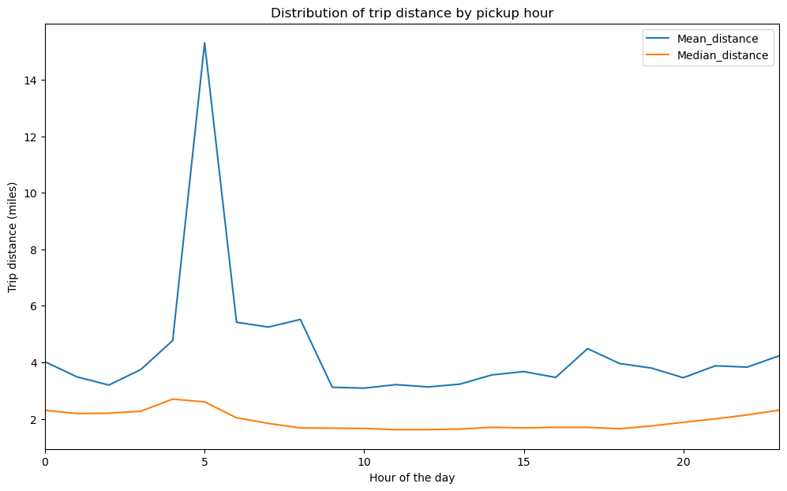
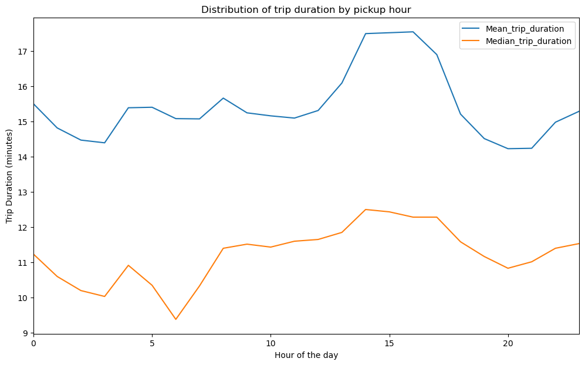
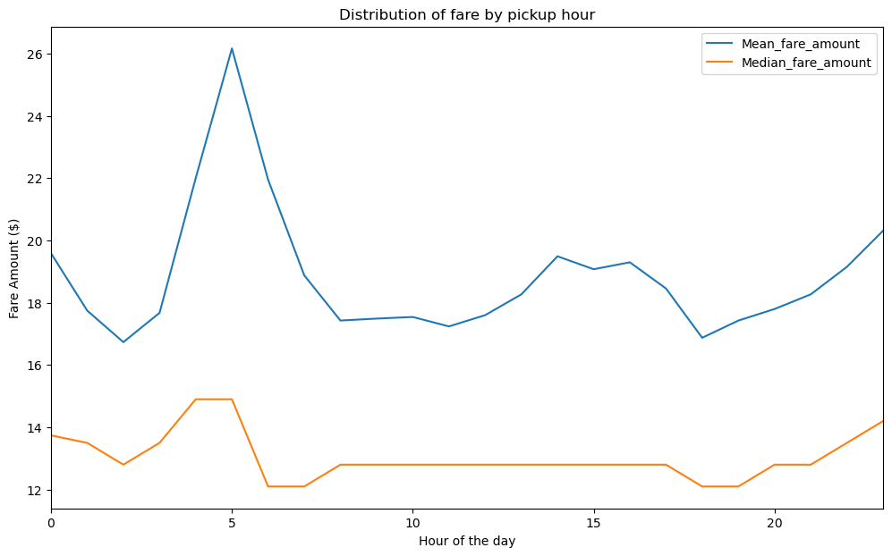
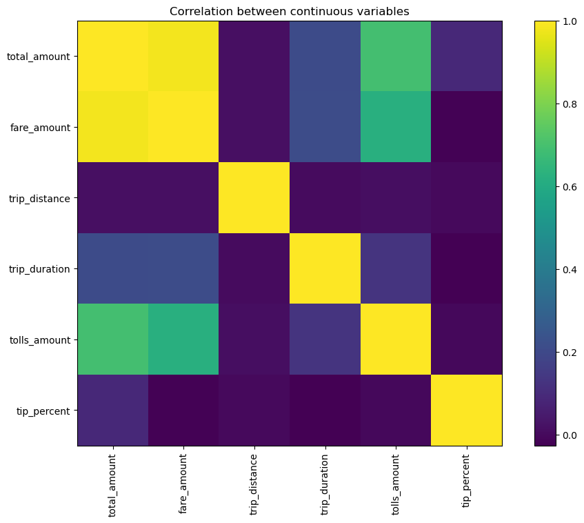
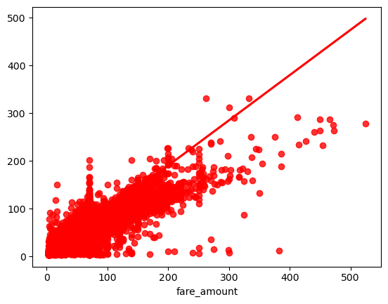

Unlocking the Secrets of NYC Yellow Taxi Data
New York City's yellow taxi is an iconic mode of transportation that serves millions of New Yorkers and tourists each day. The New York City Taxi and Limousine Commission regulates yellow taxi services in the city and releases public data on yellow taxi trips, providing valuable insights into taxi usage patterns and passenger preferences. In this blog post, we analyze yellow taxi trip data for January 2023 to uncover some interesting patterns.
This blog post analyzes publicly available data from the NYC Open Data portal, which has been preprocessed and cleaned for analysis. As part of the preprocessing, we replaced 71,743 null values for the passenger count with the rounded mean value and made certain assumptions to remove outliers from the dataset, including only considering fares greater than $2, restricting passenger count to a maximum of 6, and setting a maximum trip duration of 3 hours.
 Based on the analysis, trip distances tend to be longer during the early morning hours, possibly due to people traveling longer distances during this time. However, after 9 am when peak hour starts in New York City, the trip distances tend to saturate. To address congestion during peak hours, policy makers could consider taking action during off-peak hours.
 Trip duration is greater during evening peak hours, which shows there is more traffic congestion during this time than in the morning. We can address this issue by promoting shared trips and public transport to reduce the number of vehicles on the road and save fuel.
 The distribution graph of fare amount by pickup hour shows that the fare amount is higher during off-peak hours than during peak hours. When calculating the tip percent by hour, it is evident that drivers receive more tips after early morning trips.
 On plotting correlation between continuous variables like total amount, fare amount, trip distance, trip duration, tolls amount, and tip percent, total amount, fare amount, and tolls amount show more correlation in the given dataset.On plotting correlation between continuous variables like total amount, fare amount, trip distance, trip duration, tolls amount, and tip percent, total amount, fare amount, and tolls amount show more correlation in the given dataset.
Building a Model to Predict Fare Amounts
We wanted to build a model that could predict the fare amount for drivers based on different variables, such as trip distance, time of the day, day of the week, the number of passengers, and the location. We split the dataset into 70% trained data and 30% test data.
The regression model has 9 independent variables (passenger_count, trip_distance, PULocationID, DOLocationID, trip_duration, time_of_day_afternoon, time_of_day_evening, time_of_day_morning, and time_of_day_night) and one dependent variable (fare_amount).
An R-squared value of 0.9444607040739607 indicates that 94.4% of the variability in the dependent variable (fare_amount) can be explained by the independent variables (predictors) included in the model. In other words, the model fits the data well, and the predictors are good at explaining the variation in the dependent variable. However, it's important to note that a high R-squared does not necessarily mean that the model is error-free or free from biases. It's always a good idea to check for other diagnostics like residual plots, normality assumptions, and multicollinearity, among others.
Here is a visual that shows the actual vs. predicted fare amount: 
Policy Implications
This informs policy making by identifying factors that contribute to higher taxi fares, which could help policy makers design policies to regulate fares and improve affordability.
This analysis highlights a strong correlation between taxi fares and trip distance, indicating that longer trips tend to cost more. This insight can be used to promote longer duration trips, which may benefit both passengers and drivers. Additionally, the study reveals that time of day has a significant impact on fares, and policymakers could consider implementing surge pricing during peak hours to reduce congestion and incentivize off-peak travel.
The relationship between pickup and drop-off locations is also noteworthy, but further analysis is needed to decode the borough codes and gain deeper insights. It's important to note that the data used in this analysis only represents electronically paid taxi trips and may not reflect all taxi trips in NYC. To validate the findings, additional data sources such as surveys or ride-hailing data could be used.
If there were more time, a cluster analysis could be performed to identify different types of taxi trips based on characteristics such as distance, time of day, and passenger count. This would provide insights into different market segments and help inform targeted policy interventions. Moreover, external factors such as weather and events could be analyzed to evaluate their impact on taxi fares. Finally, exploring the relationship between taxi fares and other modes of transportation such as Uber/Lyft or public transit could provide valuable insights for policymakers.